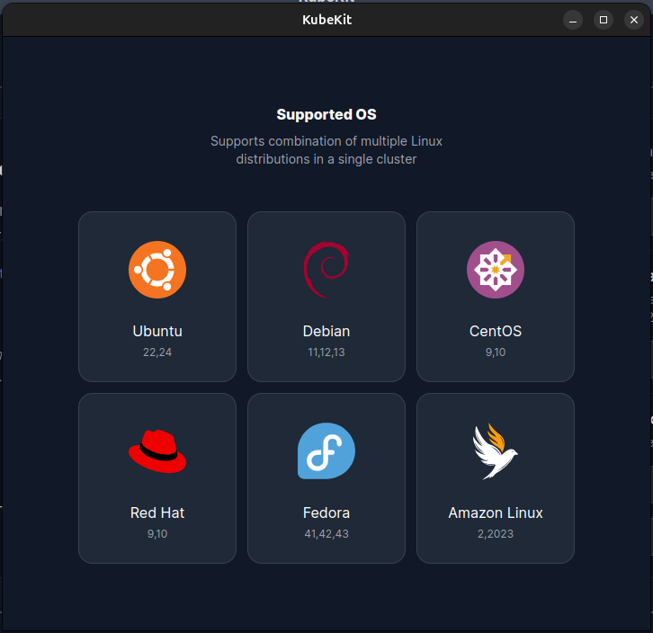

Prerequisites
Before starting the cluster creation process, ensure the following:
- You have at least two virtual machines (VMs) to create a cluster.
- Each VM should have a minimum of 2 CPU cores and 2 GB RAM.
- SSH access must be enabled on all nodes.
- All nodes should have network connectivity with each other.
If you encounter errors during the creation process, these are often related to network connectivity or SSH access. Double-check your VM configurations and retry.
Supported Operating Systems
When creating a Kubernetes cluster with KubeKit, each virtual machine (VM) must run a supported operating system. You can attempt to create a cluster with an unsupported operating system, but KubeKit does not guarantee compatibility. In most cases, the cluster creation process will likely fail or result in unstable behavior.
KubeKit supports the following operating systems for VM-based clusters:
- Ubuntu
- Debian
- Fedora
- CentOS
- RedHat
- Amazon Linux 2
- Amazon Linux 2023

Each node in your cluster (control plane and worker) must have one of the above operating systems installed and properly configured before initiating cluster creation. Using a non-supported OS may cause compatibility issues with Kubernetes components, system dependencies, or network configurations.
Recommendation: Always ensure that your VM images are up to date with the latest security patches and system packages before cluster deployment. Consistency in OS type and version across all nodes is also recommended for stable performance and easier maintenance.
Tips for a Smooth Cluster Creation
- Ensure all nodes meet the minimum system requirements.
- Check network connectivity and SSH access to each node before starting.
- Use the latest Kubernetes version for optimal stability and features.
- If an error occurs during deployment, review the logs and verify node configurations.
By following these steps, you can create a stable, fully functional Kubernetes cluster with KubeKit, ready for application deployment and management.